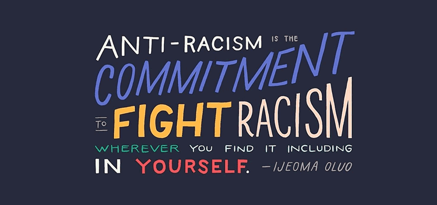

No country can claim to be free of racism, racism is a global concern, and tackling it requires a universal effort.In 1965, the international community adopted a convention by which they committed to eliminate all forms of racial discrimination. The Convention is now nearing universal ratification. Yet still, all around the world too many suffer from the injustice and stigma that racism brings. This first step to ending racism is to recognize its existence. Many people think of racism as always overtly blatant or intentional, but racism comes in many forms. In the United States, studies show there’s bias in every sector of society from healthcare to housing to media. Job applicants with “stereotypical” African-American names are less likely to get called for an interview, while around the world, the beauty industry celebrates fair skin while degrading dark skin tones. It’s also important to understand the history and evolution of racism. Things like poll taxes and literacy tests kept people from voting. While these laws didn’t explicitly mention race, they intended to target marginalized groups.
